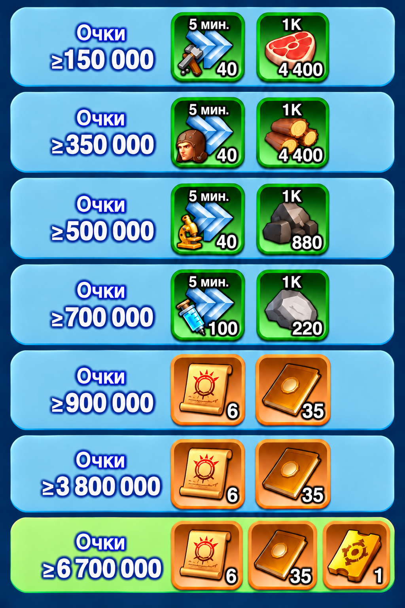

Битва за замок
Битва за замок — крупное PvP-событие, в котором альянсы государства сражаются за контроль над Солнечным замком . Здесь недостаточно просто первым в…
Битва за замок
Битва за замок — крупное PvP-событие, в котором альянсы государства сражаются за контроль над Солнечным замком. Здесь недостаточно просто первым войти в Замок. Для победы необходимо: захватить Замок → удерживать его → контролировать башни → постоянно пополнять гарнизон.
КАК ПОБЕДИТЬ
Альянс побеждает, если удерживает Солнечный замок непрерывно:
Если противник захватит Замок раньше окончания этого времени, непрерывный таймер удержания сбрасывается. После повторного захвата отсчёт начинается заново.
МАКСИМАЛЬНАЯ ПРОДОЛЖИТЕЛЬНОСТЬ
Битва может длиться максимум 5 ЧАСОВ.
Если ни один альянс не смог удержать Солнечный замок 2,5 часа подряд, победителем станет альянс, который за всё время события удерживал Замок дольше остальных суммарно.
Используем актуальное правило: 2,5 часа / 5 часов.
БУРЯ ПЕРЕД БИТВОЙ
За 2 часа до снятия защитного щита Солнечного замка в красной зоне вокруг него начинается буря.
Города, находящиеся в зоне угрозы, могут быть случайно перемещены. После окончания бури снова появляется возможность телепортироваться ближе к Замку.
Поэтому не занимайте боевую позицию слишком рано. Следите за таймером события.
РУИНЫ ВОКРУГ ЗАМКА
Вокруг Солнечного замка находится особая территория — Руины.
При движении через неё скорость марша войск значительно уменьшается.
Поэтому расстояние имеет огромное значение. Чем ближе город находится к нужной позиции после окончания бури, тем быстрее можно:
- входить в рейды;
- отправлять подкрепления;
- возвращать войска;
- реагировать на смену владельца Замка или башни.
КАК АТАКОВАТЬ ЗАМОК
Против сильного гарнизона лучше не отправлять войска хаотичными одиночными атаками.
Основная ударная сила альянса — организованные рейды.
R4/R5 заранее определяют:
- кто открывает рейд;
- кто присоединяется;
- каких героев использовать;
- какой состав войск нужен;
- когда рейд должен прийти к Замку.
Не открывайте собственный рейд без необходимости, если руководство уже собирает основной удар.
СОЗДАТЕЛЬ РЕЙДА
Создавать основные рейды лучше сильным игрокам с:
- хорошими боевыми характеристиками;
- сильными PvP-героями;
- высокой вместимостью рейда;
- подходящими усилениями.
Для 58 государства конкретный список героев здесь не фиксируем. Используем доступных сейчас героев и ориентируемся на реальные боевые отчёты.
УЧАСТНИКИ РЕЙДА
При присоединении не ставьте героев случайно.
Первый герой участника особенно важен для общих бонусов рейда. Поэтому придерживайтесь схемы, которую установили R4/R5.
Если руководство пишет «атака» или «защита», используйте соответствующую сохранённую формацию. Это намного быстрее, чем переставлять героев во время активной битвы.
СОСТАВ ВОЙСК
Для Битвы за замок не существует одной универсальной пропорции войск.
Состав зависит от:
- атаки или защиты;
- героев;
- характеристик игроков;
- уровня войск;
- состава противника;
- результата предыдущего боя.
Поэтому не закрепляем на сайте одну формулу вроде 50 / 20 / 30 или другую комбинацию как обязательную.
После крупных рейдов обязательно смотрим отчёт и корректируем следующий состав.
ОРУДИЙНЫЕ БАШНИ
Вокруг Солнечного замка находятся орудийные башни.
Если Замок и башню контролирует одна команда, эта башня не наносит урон владельцу Замка.
Если башня принадлежит противнику, она начинает атаковать гарнизон Солнечного замка.
Чем дольше противник удерживает башню, тем короче становится интервал между её атаками.
Поэтому полностью игнорировать башни опасно.
КАК РАСПРЕДЕЛЯТЬ СИЛЫ
Альянсу лучше заранее определить роли.
- Одна группа атакует или удерживает Замок.
- Другие игроки борются за орудийные башни.
- Остальные держат свободные походы и постоянно отправляют подкрепления.
Не нужно, чтобы весь альянс бездумно атаковал одну точку.
ПОСЛЕ ЗАХВАТА ЗАМКА
Захватили Замок? Бой ещё не выигран.
Сразу начинается самое важное: удержание.
- пополняйте гарнизон;
- заменяйте ослабленные отряды;
- контролируйте башни;
- следите за приближающимися вражескими рейдами;
- держите свободные походы для быстрых подкреплений.
Если гарнизон перестанет пополняться, даже очень сильного лидера постепенно можно выбить.
НЕ ПРЕКРАЩАЙТЕ ПОДКРЕПЛЕНИЯ
Не ориентируйтесь только на надпись, что гарнизон сейчас заполнен.
После боя, атаки башни, потерь или отзыва одного из игроков свободное место может появиться практически сразу.
Поэтому во время удержания участники должны постоянно следить за командами альянса и быть готовы отправить новый отряд.
РАНЕНЫЕ И ГОСПИТАЛЬ
Битва может продолжаться несколько часов.
Поэтому регулярно проверяйте:
- заполнение госпиталя;
- количество тяжелораненых;
- доступные ускорения;
- ресурсы на лечение.
Если госпиталь переполнится, продолжать активные атаки станет значительно опаснее.
Лечите войска небольшими партиями, если альянс активно помогает лечению. Так можно быстрее возвращать войска в бой.
КАК ПОЛУЧАЮТСЯ ЛИЧНЫЕ ОЧКИ
Уничтожение врагов
Очки начисляются за уничтожение вражеских войск в боях за Солнечный замок и орудийные башни.
Удержание
Чем выше мощность ваших войск, находящихся в Замке или башнях, тем больше можно получать очков за занятие объекта.
Потери
Потери в боях за Замок и башни также учитываются в личных очках события.
Поэтому высокий личный результат получается не только за количество убийств.
НАГРАДЫ ЗА ЛИЧНЫЕ ОЧКИ

СМОТРИТЕ БОЕВЫЕ ОТЧЁТЫ
После серьёзной атаки обязательно проверяйте отчёт.
- каких героев использовали обе стороны;
- состав войск;
- характеристики атаки и защиты;
- сколько войск потеряла каждая сторона;
- какая линия войск закончилась первой.
Если один и тот же рейд постоянно проигрывает, не отправляйте его снова без изменений.
ПРЕЗИДЕНТ
Победа в Битве за замок определяет управление государством.
После захвата Солнечного замка лидер победившего альянса получает возможность назначить участника альянса Президентом.
На выбор даётся 10 часов.
Президент получает доступ к системе должностей и президентским навыкам.
Если предыдущий Президент уже состоит в победившем альянсе, при определённых условиях он может быть переизбран автоматически.
ЧТО ДЕЛАТЬ УЧАСТНИКУ
- Быть онлайн заранее.
- После бури занять удобную позицию.
- Освободить походы.
- Подготовить сохранённые боевые формации.
- Следить за метками и командами R4/R5.
- Не открывать случайные рейды.
- Быстро заходить в назначенный рейд.
- После захвата переключиться на подкрепления.
- Следить за башнями.
- Проверять госпиталь.
- Смотреть отчёты после важных боёв.
ЧТО ДЕЛАТЬ R4/R5
- Назначить основных лидеров рейдов.
- Определить игроков для атаки Замка.
- Назначить группы на башни.
- Подготовить схему героев для участников.
- Давать понятные команды: атака / защита / башня / подкрепление.
- Следить за таймером непрерывного удержания.
- Контролировать суммарное время владения Замком.
- Не прекращать пополнение гарнизона.
- Анализировать отчёты и менять тактику.
ЧАСТЫЕ ОШИБКИ
- Использовать старое правило 3 часа / 6 часов.
- Атаковать сильный гарнизон по одному.
- Всем самостоятельно открывать рейды.
- Игнорировать орудийные башни.
- Считать первый захват окончательной победой.
- После захвата перестать отправлять подкрепления.
- Не учитывать медленное движение через Руины.
- Ставить случайных героев в рейды.
- Использовать одну пропорцию войск для атаки и защиты.
- Повторять проигранный рейд, не посмотрев отчёт.
- Не следить за госпиталем.
- Покинуть бой до окончания таймера удержания.
Главная цель — Солнечный замок.
Для победы: 2 часа 30 минут непрерывного удержания.
Максимальная битва: 5 часов.
Башни противника наносят урон гарнизону Замка.
В Руинах марши сильно замедляются.
Атакуем организованными рейдами.
После захвата постоянно пополняем гарнизон.
Следим за ранеными и госпиталем.
После боёв читаем отчёты.
Замок берут сильным рейдом, но выигрывают его башнями, подкреплениями и временем.